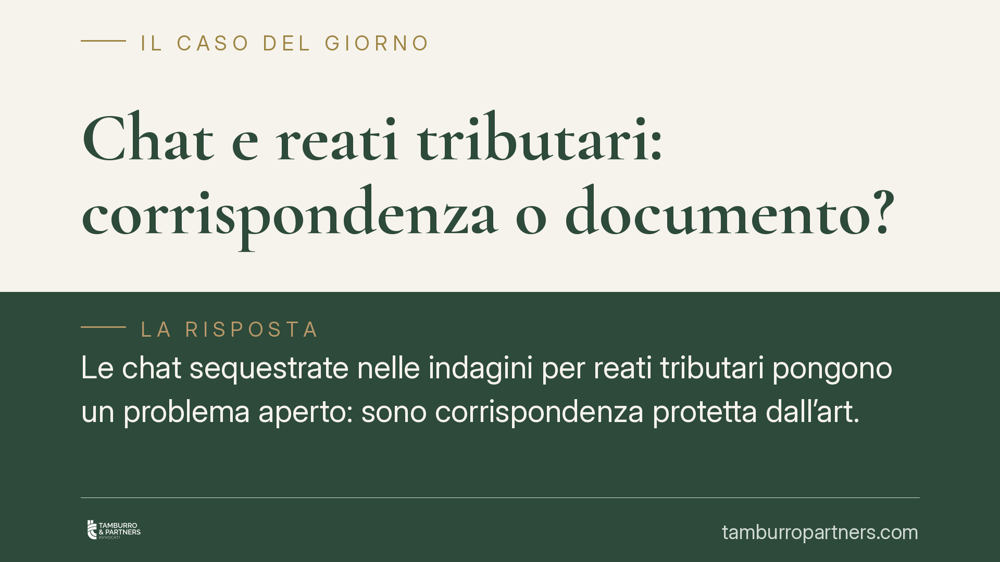

Chat e reati tributari: corrispondenza o documento?
Le chat sequestrate nelle indagini per reati tributari pongono un problema aperto: sono corrispondenza protetta dall'art. 15 della Costituzione o semplice prova documentale? La distinzione incide sulle garanzie e sull'utilizzabilità del materiale raccolto. Il quadro giurisprudenziale è in evoluzione e alcune ricostruzioni diffuse vanno lette con prudenza.

Il fatto e perché conta
Nelle verifiche della Guardia di Finanza e nelle indagini della Procura per reati previsti dal D.lgs. 74/2000, i messaggi scambiati su applicazioni di messaggistica sono diventati una fonte di prova ricorrente. Il tema giuridico è capire quale regime li governi: se quello, più rigoroso, della corrispondenza tutelata dalla Costituzione o quello, meno garantito, della prova documentale.
La risposta non è di dettaglio. Cambia il tipo di provvedimento necessario per acquisire il materiale, i presupposti di legittimità e, in ultima analisi, l'utilizzabilità della prova nel processo.
Inquadramento normativo
L'art. 15 della Costituzione tutela la libertà e la segretezza della corrispondenza e di ogni altra forma di comunicazione. La limitazione è ammessa solo per atto motivato dell'autorità giudiziaria e con le garanzie stabilite dalla legge.
La Corte costituzionale, con la sentenza n. 170 del 2023, ha affermato che i messaggi e le email già ricevuti e conservati nella memoria di un dispositivo mantengono natura di «corrispondenza» ai sensi dell'art. 15 Cost.: la tutela costituzionale non si esaurisce con la ricezione del messaggio. È un punto rilevante, perché sposta l'asticella delle garanzie richieste per l'acquisizione.
Va però segnalato un profilo di cautela. Si è diffusa una lettura secondo cui, con il trascorrere del tempo, le chat perderebbero la natura di corrispondenza per «degradare» a mero documento storico, acquisibile con garanzie ridotte ai sensi dell'art. 234 c.p.p. (prova documentale). Allo stato, questo criterio di affievolimento temporale non risulta enunciato in termini così netti dalla giurisprudenza costituzionale, che ha affermato semmai il contrario: la permanenza della tutela anche dopo la ricezione. Chi invoca un principio di «scadenza» della protezione attribuisce alla Corte un'affermazione che, nella lettura più prudente delle pronunce, non trova un fondamento univoco.
Sul piano delle modalità di acquisizione, la corrispondenza sequestrata è disciplinata dagli artt. 254 e 254-bis c.p.p. (sequestro di corrispondenza e di dati presso fornitori di servizi), mentre l'art. 234-bis c.p.p. riguarda l'acquisizione di documenti e dati informatici detenuti all'estero. La qualificazione del messaggio incide dunque direttamente sulla norma applicabile e sulle garanzie procedurali. Il riferimento all'art. 234 c.p.p. vale invece nel diverso scenario in cui il materiale venga trattato come prova documentale.
> Avvertenza: la materia è in rapida evoluzione. Numeri, date e massime delle pronunce citate vanno verificati su banca dati ufficiale alla data di lettura, poiché gli orientamenti possono consolidarsi o mutare.
Il nodo delle indagini retrospettive
Nelle indagini tributarie il problema si presenta in forma tipica. La verifica interviene spesso su fatti risalenti nel tempo e recupera conversazioni datate, contenute in dispositivi o backup. Qui la qualificazione giuridica diventa decisiva.
Se quei messaggi sono corrispondenza ex art. 15 Cost., la loro acquisizione richiede un provvedimento dell'autorità giudiziaria e il rispetto delle garanzie previste per il sequestro di corrispondenza. Se invece vengono trattati come documenti, le garanzie si riducono sensibilmente.
Proprio perché il presunto criterio del «degrado temporale» non è pacifico, l'imprenditore indagato non può fare affidamento sull'idea che le chat più vecchie siano automaticamente più esposte o più protette. È un terreno controverso, in cui la difesa può e deve discutere la natura del materiale e la legittimità delle modalità di acquisizione.
Implicazioni pratiche
Per chi gestisce un'impresa, il messaggio è chiaro: la corrispondenza digitale aziendale può diventare materiale d'indagine, e la sua utilizzabilità dipende da qualificazioni giuridiche ancora dibattute. Non esistono automatismi rassicuranti.
È opportuna una gestione consapevole della documentazione digitale, valutando fin dall'inizio quale disciplina governi l'eventuale acquisizione e quali eccezioni possano essere sollevate.
Cosa fare in concreto
- Verifica il titolo di acquisizione. Controlla se le chat sono state acquisite tramite sequestro di corrispondenza (artt. 254 e 254-bis c.p.p.) o trattate come documenti: dalla qualificazione dipendono le garanzie.
- Contesta la natura del materiale. Solleva tempestivamente la questione se i messaggi meritano la tutela dell'art. 15 Cost. e se le modalità di acquisizione l'hanno rispettata.
- Ricostruisci la catena di custodia dei dati informatici, verificando integrità e provenienza dei backup o dei dispositivi analizzati.
- Documenta le tempistiche di formazione e conservazione dei messaggi, senza dare per scontato alcun criterio temporale a proprio favore o svantaggio.
- Aggiorna la verifica giurisprudenziale alla data del procedimento: gli orientamenti su chat e corrispondenza sono in movimento.
Contributo informativo a cura di Tamburro & Partners - Avv. Giuseppe Tamburro. Non costituisce parere legale.
Ogni condominio ha una storia a sé.
Se gestisci un'amministrazione e vuoi un confronto su una specifica questione condominiale, scrivi allo studio. Ti rispondiamo entro un giorno lavorativo.